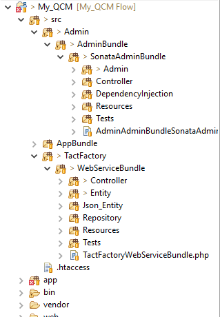
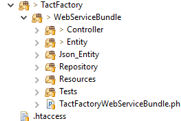

Le projet d’administration est développé en PHP en version 5.5.12 avec le Framework Symfony2 en version 2.8 et le bundle SonataAdminBundle en version 2.3 minimum.
Eclipse |
VERSION : Mars.1 Release (4.5.1) Build ID : 20150924-1200 |
Dépendances |
"php": ">=5.5.12", "symfony/symfony": "2.8.*", "doctrine/orm": "^2.4.8", "doctrine/doctrine-bundle": "~1.4", "symfony/swiftmailer-bundle": "~2.3", "symfony/monolog-bundle": "~2.4", "sensio/distribution-bundle": "~5.0", "sensio/framework-extra-bundle": "^3.0.2", "incenteev/composer-parameter-handler": "~2.0", "friendsofsymfony/user-bundle": "~2.0@dev", "friendsofsymfony/rest-bundle": "dev-master", "jms/serializer-bundle": "dev-master", "sensio/generator-bundle": "2.3.*", "sonata-project/admin-bundle": "^2.3", "sonata-project/doctrine-orm-admin-bundle": "^2.3" |
Afin d’installer les dépendances, il est conseillé d’utiliser Composer de Symfony2. De cette manière, le Framework installera automatiquement les package et les dépendances nécessaires.

Nom du répertoire |
Rôle |
app\ |
Dossier d’installation et de configuration de Symfony2 |
src\ |
Dossier répertoriant tous vos projets |
src\Admin\ |
Dossier répertoriant tous les projets permettant la création d’une interface d’administration |
src\Admin\AdminBundle\ |
Dossier répertoriant tous les composants de l’interface d’administration créée avec le Framework Symfony2 |
src\Admin\AdminBundle\SonataAdminBundle |
Dossier répertoriant tous les composants de l’interface d’administration créée avec le Framework Symfony2 et le bundle SonataAdminBundle. |
…\SonataAdminBundle\Admin |
Regroupe l’ensemble des class permettant la création des éléments métiers à afficher dans les vues |
…\SonataAdminBundle\Controller |
Regroupe l’ensemble des class controller permettant de faire le lien entre la vue et la classe métier |
…\SonataAdminBundle\DependencyInjection |
Classes permettant la configuration et la gestion du bundle |
…\SonataAdminBundle\Resources |
Tous les fichiers de ressources |
Le projet du WebService avec le frameWork Symfony 2 (v2.8) avec PHP en version 5.5 et le bundle APIRestBundle en version 2.3 pour la création du routing et JMSSerializerBundle en version 2.3 pour la création du flux Json.
Projet |
Nom de la dépendance |
Dépendances |
"php": ">=5.5.12", "symfony/symfony": "2.8.*", "friendsofsymfony/rest-bundle": "dev-master", "jms/serializer-bundle": "dev-master", |

Environnement de développement
Créé avec HelpNDoc Personal Edition: Écrire des livres électronique Kindle